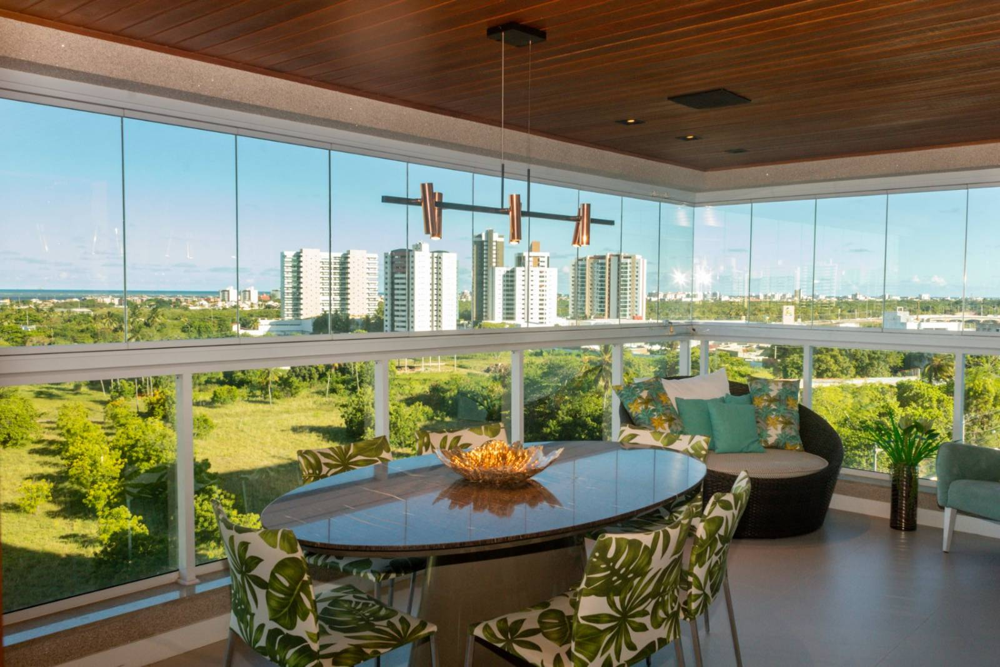
Varanda nova
Envidraçamento sob medida
Projeto, fabricação e instalação de varandas, sacadas, áreas gourmet e ambientes comerciais — com vidro temperado e acabamento premium.
Ver soluções Catálogo
Solicitar orçamento
Catálogo
Solicitar orçamento
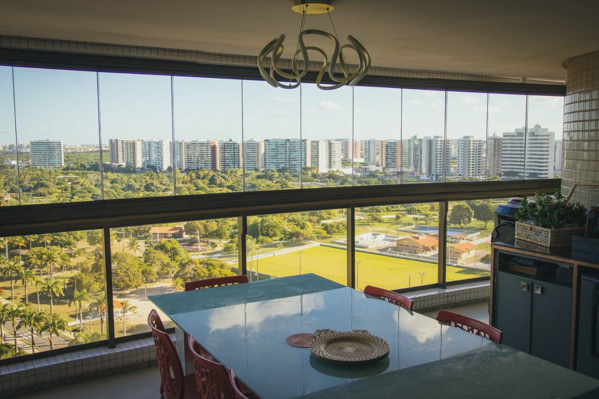
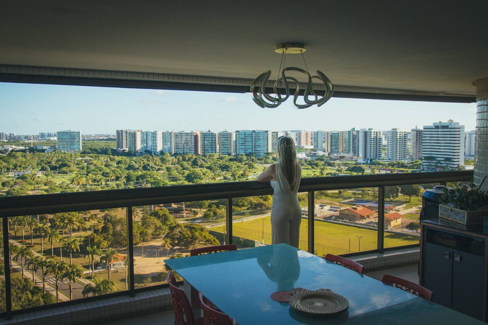
Vidros inteligentes · Alma sergipana
Arraste a alça para ver a mesma varanda antes e depois
O que fazemos

Projeto, fabricação e instalação de varandas, sacadas, áreas gourmet e ambientes comerciais — com vidro temperado e acabamento premium.
Ver soluções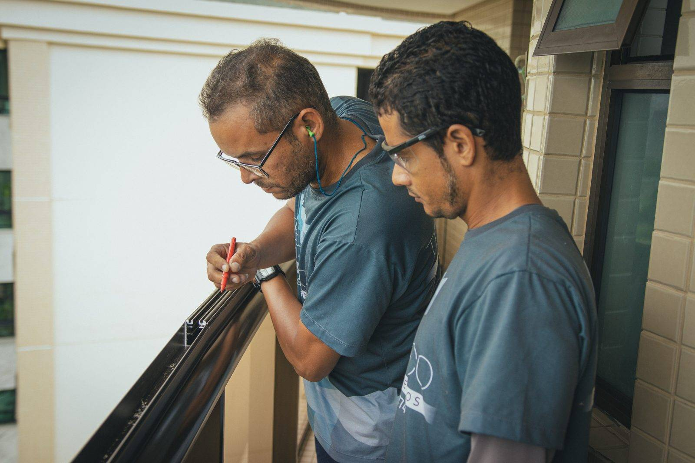
Cuidamos também de vidros que não foram instalados por nós: regulagem, lubrificação, vedação, ferragens e substituição de vidros.
Ver manutençãoPor que envidraçar
Reduz ruídos externos e a variação de temperatura, deixando o ambiente agradável em qualquer estação.
Aproveite a varanda mesmo nos dias de intempérie, sem infiltração, poeira ou móveis molhados.
Vidros temperados de alta resistência e ferragens de qualidade que protegem crianças, pets e sua família.
Acabamento premium que agrega valor estético e comercial ao apartamento, casa ou espaço corporativo.
Integre a varanda à sala e ganhe um novo ambiente para relaxar, receber ou trabalhar.
Sistemas que abrem e recolhem com facilidade, sem perfis pesados — a limpeza é rápida e sem complicação.
Soluções & serviços
Do residencial ao comercial, projetamos e instalamos a solução ideal — unindo tecnologia, estética e a segurança de quem entende do assunto.
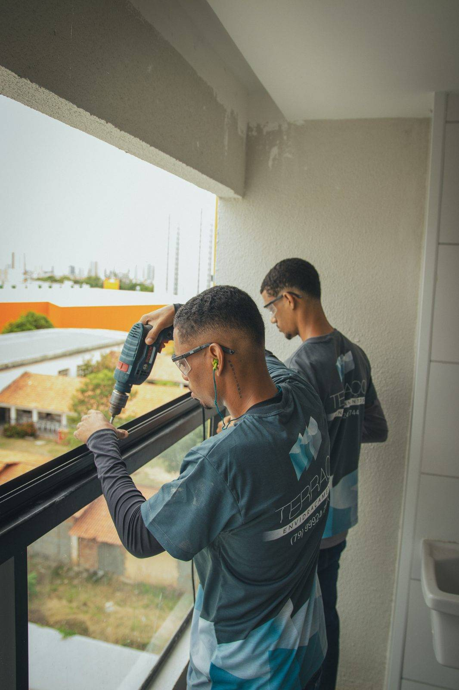
Nossa história
A Terraço nasceu em Aracaju da vontade de fazer envidraçamento de outro jeito: com técnica de verdade, materiais de qualidade e um atendimento que olha nos olhos do cliente. Foi assim, projeto a projeto, que construímos mais de 15 anos de história.
Hoje somos referência em vidros inteligentes no estado — mas seguimos com a mesma mesa, as mesmas conversas e o mesmo cuidado com cada varanda que passa pelas nossas mãos.
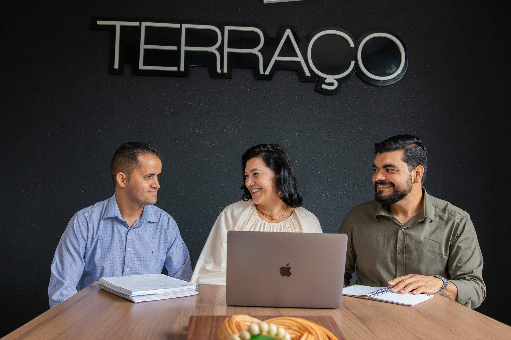
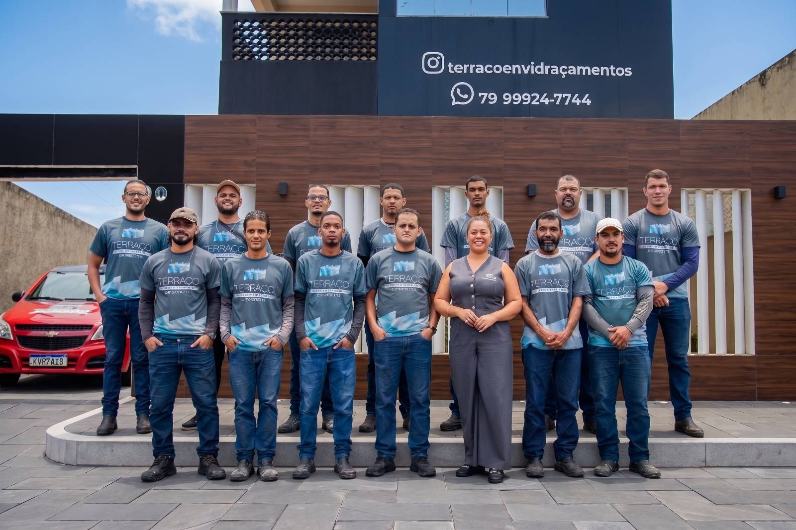
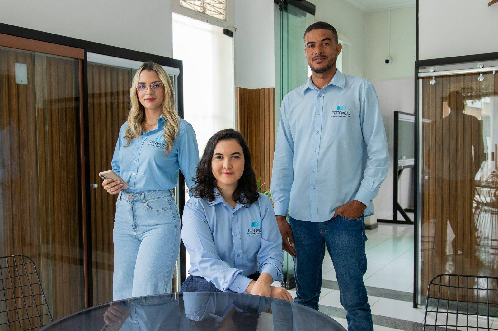
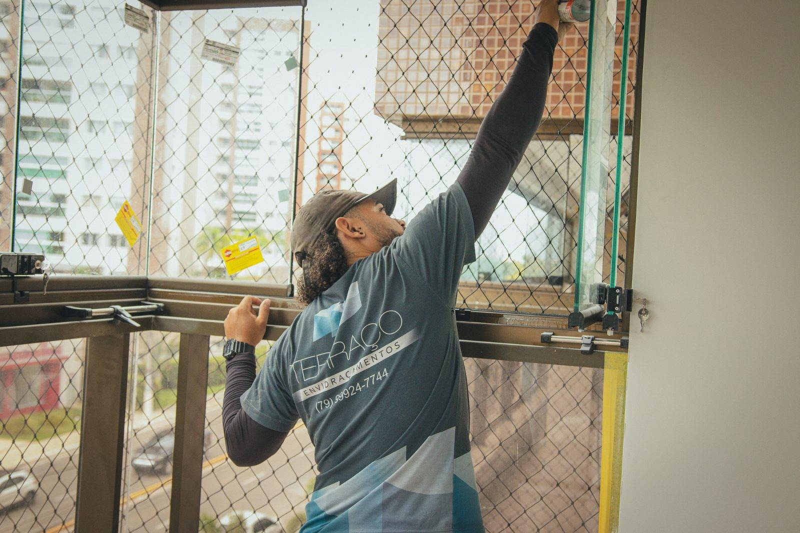
Por que a Terraço
Somos uma empresa 100% sergipana especializada em vidros inteligentes. Mais do que instalar, entregamos uma solução pensada para o seu jeito de viver — com atendimento próximo e compromisso em cada etapa.
Projetos realizados
Projetos residenciais e comerciais entregues em Aracaju e região.
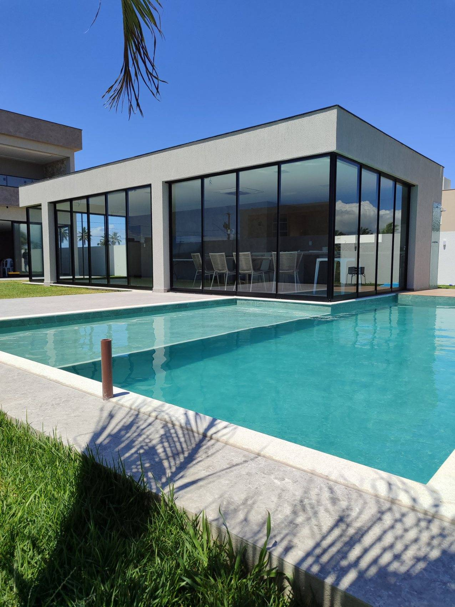
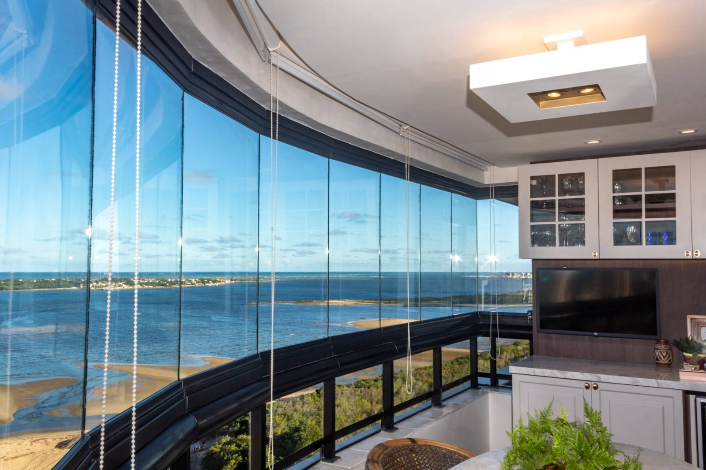
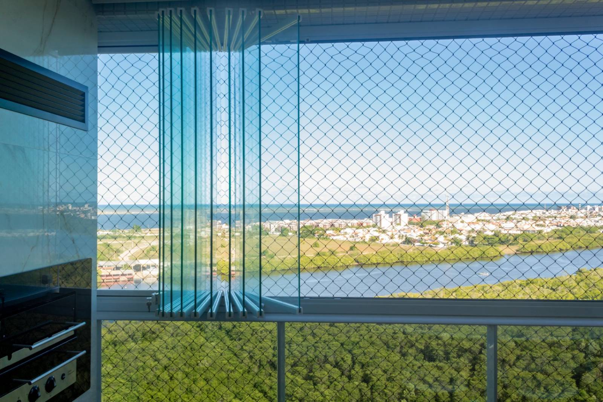
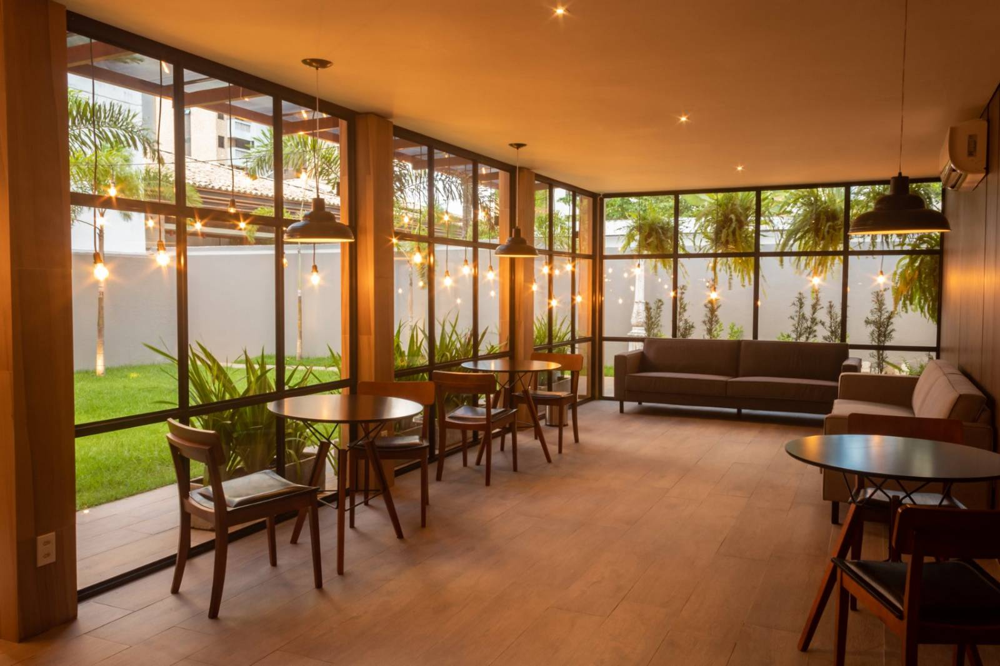
Como funciona
Você fala com a gente pelo WhatsApp e conta o que precisa. Rápido e sem compromisso.
Vamos ao local, medimos com precisão e indicamos a melhor solução para o seu espaço.
Produzimos sob medida e instalamos com equipe própria, cuidando de cada detalhe.
Entregamos limpo e pronto para usar — e seguimos ao seu lado com garantia e suporte.
Manutenção e pós-venda
Regulagem, lubrificação, troca de peças e revisão preventiva — feitos pela mesma equipe que instalou o seu vidro.
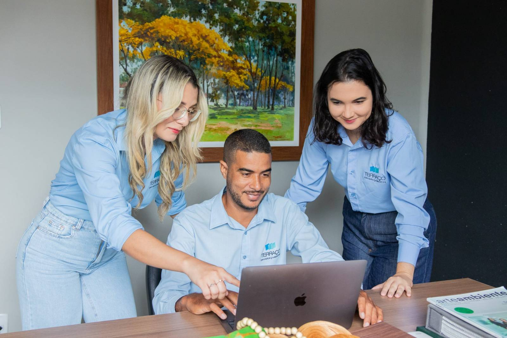
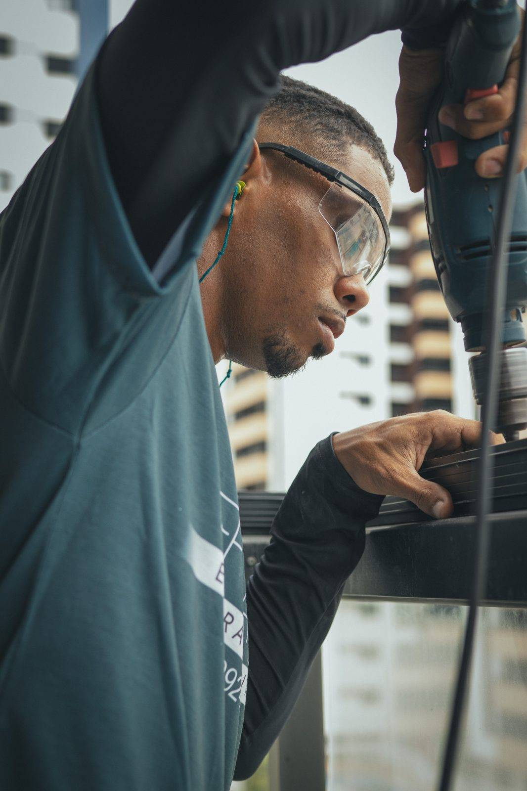
Quem já transformou
Quem mora aqui e quem escolheu Sergipe para viver: ouça de quem já transformou o próprio ambiente.
Espaços reservados para os depoimentos em vídeo — basta enviar os arquivos ou os links.
"A varanda virou o cômodo preferido da casa. Ficou lindo, o atendimento foi impecável e cumpriram o prazo direitinho."
"Fechamos a área gourmet e agora usamos o espaço o ano todo. Equipe técnica, séria e muito atenciosa do começo ao fim."
"Contratamos as divisórias de vidro do escritório. Ficou moderno, com muita luz natural. Recomendo de olhos fechados."
Depoimentos ilustrativos — substituiremos pelos reais assim que você enviar.
Dúvidas frequentes
Fale direto com a nossa equipe pelo WhatsApp — respondemos rápido.
Falar no WhatsApp →Sim. Trabalhamos com vidros temperados de alta resistência e ferragens de qualidade. O sistema é projetado para oferecer proteção real, com travas e acabamento seguro.
A manutenção é mínima. A limpeza é simples, com pano e produto neutro. Orientamos sobre os cuidados na entrega e seguimos disponíveis no pós-venda.
Depende do tamanho e da solução escolhida, mas a maioria dos projetos residenciais é instalada em um ou poucos dias. Informamos o prazo exato no orçamento.
Sim, oferecemos garantia sobre os materiais e a instalação. Os detalhes são apresentados junto com a proposta, de forma transparente.
Sim. Os sistemas contam com vedação adequada para proteger o ambiente de vento, chuva e poeira, mantendo a varanda utilizável em qualquer clima.
Com certeza. Atendemos residências, comércios e escritórios, com divisórias, fachadas e peças totalmente sob medida para o seu projeto.
Vamos começar
Conte para a gente o ambiente que você quer transformar. O atendimento é rápido, próximo e sem compromisso.
Solicitar orçamento no WhatsApp →Atendimento em Aracaju e região · {{ waDisplay }}
Depoimento em vídeo
Este espaço está reservado para o vídeo de {{ videoName }}. Envie o arquivo ou o link e ele será exibido aqui.